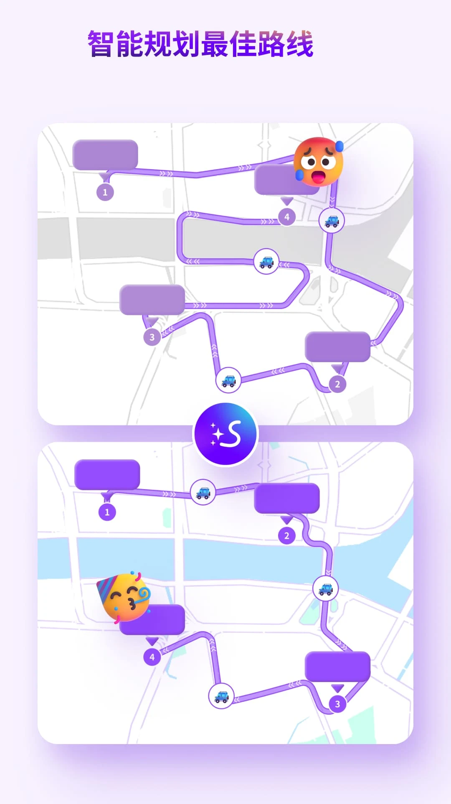

Exping 隐藏功能深挖：你以为它只是个地图收藏夹？
区域标注能算面积、路线生成自带智能排序、多人协作还能实时共享位置——这些藏得极深的冷门玩法,当年用过的人不多。
你以为 Exping 就是个在地图上打几个标记、攒一下收藏点的小工具?去 Exping官网 翻一下介绍页就会发现它藏得比想象的深。我前前后后翻了三个版本的设置菜单、把老社区的帖子翻了一遍,才发现好几层别人根本没注意到的东西——官方从不单独宣传,但用过一次就再也回不去。
第一挖:区域标注不只是画个圈,它直接帮你算面积
绝大多数地图类工具的标记都只有一个形态:点。Exping 不一样——它允许你沿边界连续落点,围合成一个多边形,圈出一片区域。这个功能本身就不多见,但真正藏得深的是两个细节。
第一个是单位随手换。圈完一片水域当钓场,面积自动算出来,但默认给的是平方米——量园区和量菜地本来就不该用同一个单位,Exping 给你列了平方米、公顷、平方公里一串选项,改一下就行。我见过有钓鱼佬专门截图晒过这个:整片水库圈出来换算成亩,直接估鱼情密度。
第二个是区域和点位互不干扰。同一张图上,你可以先圈出露营地的整片范围,再在圈内逐个钉水源点、帐篷点、垃圾投放点。半透明多边形色块盖在上面,视觉上层次一下就出来了。官方案例里"外勤门店管理"那张图就是这么画的:小区边界一整个区域,楼栋和配套设施全是点,租户分布看一眼就明白。
用法其实没什么门槛——画区域的手感和画路线几乎一样,沿边界依次落点,围合就是,圈错了拖顶点调一下,不用重画。真正可惜的是它藏在"标记"的二级菜单里,从官方下载拿的安装包第一次打开,大多数人直接用默认的点标记,根本没往下翻。

第二挖:路线生成的智能排序,当年真的省了很多事
把零散的点串成路线这一步,Exping 给的交互很直接:长按起点 → 依次点选 → 生成。但宣传物料里悄悄藏着一个智能规划最佳顺序的开关,官方几乎没在正式文档里提过,只在社区发过一张 GIF 演示。
原理就是系统按算法给选中的点位算一遍最优顺序,省去你手动排序的麻烦。对送访、跑件这种"顺序敏感"的活,这一下真的能省十分钟——手动排十几个点的先后顺序,排错一个就得全部重来。Exping文档里几乎没正式写这个开关,自动排序之后你再手动微调几个关键的,效率翻倍。

路线生成之后还有几个小彩蛋:切不同出行方式,步行和驾车的距离耗时会跟着变;支持首尾相接的封闭环线,绕湖环岛骑行这类需求用得上;1.2.x 版本之后路线带方向箭头,不会看反走向。当年单张地图路线数上限是 7 条、单条路线地点上限 30 个——规划多天行程时,一天一条路线正好把分组和路线的配对关系用满。
第三挖:多人协作的实时位置共享,当年没人敢信一个地图工具能做
Exping 的协作是它最不像"个人收藏工具"的地方。在地图页找协作入口,生成链接发出去,对方点进来就能一起编图——这个流程本身不算新鲜,但有两个细节真的惊艳。
实时同步编辑是其中一个:你在这头标了一家店,我那边地图上立刻冒出来,延迟几乎感觉不到。官方描述就七个字,但实际用的时候体验完全不一样——结伴旅行行前共建一张图,每人往里加想去的点,不用在群里刷聊天记录、不会有人漏了别人的新增,效率是真的高。
另一个更狠的是实时位置共享。协作成员之间可以开位置,走散了不用打电话,打开地图就知道谁在哪。官方把这个列为协作场景的主打能力之一,但论坛里真的用到的人很少——毕竟大多数人只是拿它攒攻略,没想过拿它当户外活动的实时看板。权限分"仅查看"和"共同编辑"两档,发起人按需给,不用一股脑全放开。
一个很可惜的隐藏保护:72 小时删除倒计时
这个算功能也算机制,但官方也没大张旗鼓地说。删除一张地图不是立刻消失,而是进入 72 小时倒计时状态,期间反悔了在类似回收站的入口里点恢复,地图完整回来。当年做地图做了一个月的人遇到手滑删除,靠这个机制救回了不止一张。
但它的前提是账号和服务——2024 年 12 月 31 日服务关了之后,这个机制就没有落脚点了。现在手机里如果还留着停服前的旧版本和登录态,当年删过的地图理论上还能翻出来,但倒计时窗口早已随时间流逝关闭。这个功能今天基本失效,但它当年的设计思路值得在新工具里留意:挑替代工具时,顺手看一眼有没有回收站或删除保护,总比删完立刻消失强。
收尾
Exping 停服之后,我陆续试过几个替代工具,但没一个能同时把区域面积计算、智能路线排序、多人实时协作这三个点都做好的。这几个隐藏功能藏得深、官方不宣传,但用过就知道——它们不是什么锦上添花的小优化,是把"地图收藏"从被动变成主动创作的关键设计。
当年协作地图的内容、导出的 Excel 文件、甚至只是一张截图,都是那段时间仅存的载体。如果你还留着旧版本或者当年导出的文件,别删——那是这个工具给你留下的最后一点东西。安装包现在只能从旧备份里找,想翻老档案也只能从社区或备份里挖。
当年整理过的地图导出件和协作记录,我在 GitHub、Gitee、GitCode 三个仓库都同步了一份,方便同行者查阅。